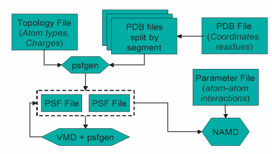

The 'psfgen' plugin is a structure building tool consisting of a
library of portable structure and file manipulation routines that
implement Tcl interface, callable from within VMD.
File Formats
The 'psfgen' plugin reads standard PDB files, Charmm topology files,
and PSF files in X-PLOR/NAMD format. Psfgen will accept PSF files using
the Charmm CMAP cross-term map force field extension.
Psfgen does not currently support Charmm PSF files using the
Charmm 'EXT' expanded format, but will updated soon.

Flowchart indicating the role of files as used by VMD, NAMD, and psfgen